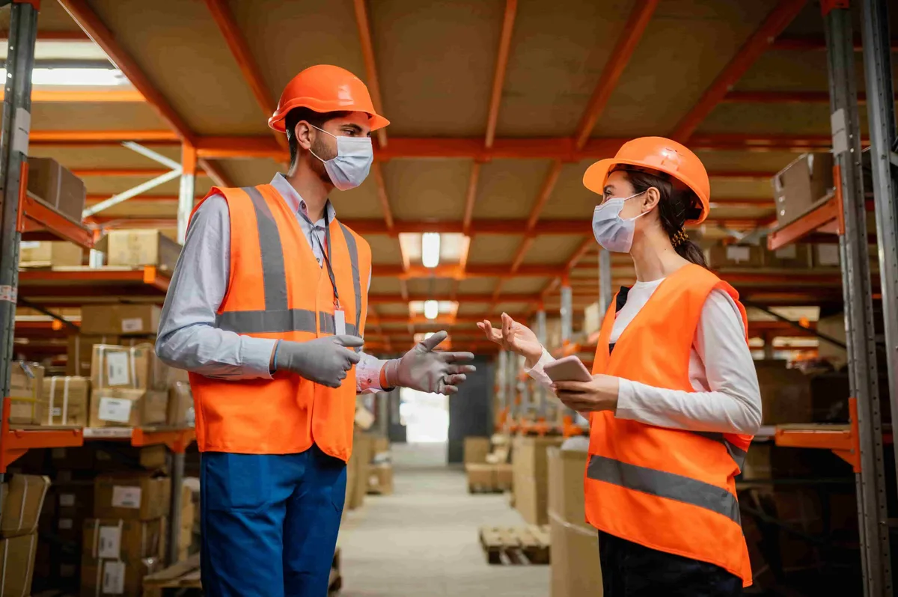

Lock Shield Cart aims to provide accessible, effective, and viable safety product solutions for real-world applications throughout the United Arab Emirates (UAE). As one of the leading safety products suppliers in UAE, we are dedicated to supplying the basic materials required to ensure that individuals are protected from harm; that businesses are protecting their employees, customers, facilities, and other valuables; and that the facilities they operate within are protected as well, all while following local laws and regulations. All safety requirements are unique to specific locations, i.e., residential buildings, office buildings, warehouses, manufacturing facilities, and marine facilities are subject to a broad range of safety-related hazards. Therefore, our approach to providing safety materials is to supply products that can be used for day-to-day safety reasons and are in accordance with the local authorities’ specifications. As one of the best safety products suppliers in UAE, we are here to help create a safe environment for all through quality materials and regular access to those materials. Our product offering includes everything from basic fire safety to advanced detection systems that are designed to assist you with your day-to-day safety needs without creating confusion or unnecessary complication.
Fire Safety Equipment for Homes and Commercial Spaces
Fire safety is still a major concern across the UAE, particularly in the expanding urban and business centers. Lock Shield Cart offers a range of fire safety solutions for domestic, commercial, and industrial concerns, ensuring both compliance with local standards of safety and ease of maintenance. Our range of fire extinguishers, hose reels, fire blankets, exit signage, and companions is suitable for daily operational readiness as well as for use in emergency situations. Each of our products has been selected based on its durability and compliance with applicable local provisions for safety. Fire safety products should be easy to install and have quick access to them in times of crisis, which is why we focus on providing products that are user-friendly and dependable. As safety products suppliers in UAE, we take pride in being able to provide all the essential materials for fire safety without delays or cumbersome purchase processes.
Fire Alarm Systems and Detection Solutions
Fire detection is vital to minimizing fire losses and saving lives. We produce fire detection and alarm systems for many different types of buildings. We are one of the reliable fire safety products suppliers in UAE. We provide systems that will alert people to fire threats at an early stage. Our product range includes panels that control fire alarm systems, smoke detectors, heat detectors, manual call points, sounders, and visual alarm devices. Fire alarm systems can be applied in residential buildings, commercial buildings, warehouses, and industrial buildings. Fire alarm systems function as intended, and they must integrate well with the fire safety plan for the building. Our focus as fire safety products suppliers in UAE is on providing fire alarm components that provide clear indications, are dependable, and do not introduce any unnecessary technical complexity to the user.
Emergency Lighting and Exit Safety Essentials
When emergencies arise, having the right amount of visibility can literally mean the difference between life and death! Emergency lighting systems and exit safety solutions supplied by Lock Shield Cart will assist in helping individuals move safely during power outage situations or other emergency scenarios. As one of the leading safety products suppliers in UAE, we want you to rest assured that all of our products are intended for long-term use with regular safety inspection to ensure they are functioning properly. Our range of emergency lighting solutions includes exit lights, bulkhead lighting, and rechargeable emergency lamps, as well as directional signage. These are all commonly used within different types of commercial (office) buildings, multisite residential developments, hotels, hospitals, and various types of industrial facilities. Using clear exit paths and operational emergency lighting reduces panic during an emergency and promotes a more organized way to exit an area or building quickly and safely. Being one of the top safety products suppliers in UAE, we provide the light source you will need for individuals to navigate and exit safely from an area at times that mean the most.
Gas Detection and Safety Monitoring Systems
Gas hazards are everywhere, from commercial kitchens to industrial facilities to marine locations. At Lock Shield Cart, we provide gas detection and monitoring solutions that will help you detect gas leaks at the first sign of trouble (early) and limit the potential for danger due to a lack of detection and delay in receiving warnings about gas leaks. Being among the top safety products suppliers in UAE, we offer a variety of gas detection devices, including gas detectors, gas leak detection devices, and gas detection and monitoring systems. Each of these products can be used in a variety of applications and will help provide a safer working environment by identifying potential hazards before they become serious enough to cause injury. Having the proper tools to keep workers safe from gas hazards in today’s modern industry is very important. As one of the leading safety products suppliers in UAE, we provide customers with all their detection needs so they can monitor the situation and respond quickly without any added complexity.
Marine and Workplace Safety Materials
Safety needs go beyond just buildings and include marine environments and the workplace. There are also special safety materials for these areas. Lock Shield Cart is your source for marine safety gear and warehouse, workshop, or industrial area safety equipment, so you will be able to find all types of safety equipment from us, regardless of your requirements. Being one of the reliable safety products suppliers in UAE, we provide personal protective equipment (PPE), safety signs, marine safety equipment, and workplace safety supplies to support company operations while reducing the potential for accidents to affect employees and property. Thereby providing the appropriate materials to all businesses operating both on land and in the marine environment, we promote safe workplaces in numerous industries.
Frequently Asked Questions
- What type of safety products does Lock Shield Cart carry?
We deal in firefighting safety equipment, fire alarm systems, emergency lights, gas leak detection systems, marine safety products, and workplace safety products for residential, commercial, industrial, and marine settings.
- Are the products suitable for use in the UAE?
Yes, they are. The products are provided based on the needs on the ground and are applicable in different settings within the UAE.
- Do you have delivery all over the UAE?
Yes. We will provide free delivery services to make the safety products available at the places of need.
- Can your products be used for both small and large facilities?
Yes, our range applies to homes, offices, warehouses, industries, and ships of all sizes.
- Subpage-Construction Safety Equipment Supplier
Construction Safety Equipment Supplier
As a trusted construction safety equipment supplier, we are proud to provide construction safety supplies for the full range of projects, regardless of size, throughout the UAE. Construction sites carry daily risk, and providing site staff with the appropriate construction safety supplies can help reduce the risk of injury and keep workers safe. Our mission is to be a reliable source of quality, compliant construction safety supplies that promote a safe environment for both workers and employers, while helping to eliminate delays and confusion with safety products and equipment. Providing easy access to quality construction safety supplies that fit the needs of construction sites is equally important for all contractors, whether small or large.
Recognizing Construction Site Safety Requirements
Although construction sites can vary significantly from each other, the risks associated with the construction industry tend to be similar across all projects. There are risks to workers from heights; there are risks associated with operating heavy machinery; there are risks associated with working with electricity; there are risks associated with fire; and there are risks associated with operating in confined spaces. As a construction safety equipment supplier, our main focus is to provide construction safety supplies that are practical to manage the above risks. The equipment we carry helps facilitate daily construction site operations, provides means to inspect requirements, and supports emergency preparedness to keep all workers safe throughout the entire construction project lifecycle. We believe that construction safety supplies need to be easy to find, easy to use, and readily available when required. Therefore, all of our construction safety supplies have been designed to match ‘real world’ conditions on job sites and are not only for ‘checklist’ purposes.
Essential Equipment for Daily Construction Safety
A trustworthy construction safety equipment supplier should have a comprehensive selection of construction equipment to support day-to-day operations at all construction sites. Lock Shield Cart has an extensive line of construction safety equipment, including hard hats, gloves, work boots, Hi-Viz clothing, fire extinguishers, hazard identification signs, emergency lights, and gas detection devices. Each piece of construction safety equipment is designed to assist in reducing injuries and increasing safety awareness throughout a construction site. Our construction safety equipment is supplied to different locations and meets and adheres to safety requirements as determined by the applicable local jurisdiction for residential, commercial, and industrial construction sites. As a construction safety equipment supplier, our objective is to support the efforts of job site managers and furnishing organizations to provide proper performance-related construction safety equipment for demanding situations experienced at the job site.
Supporting Essential Compliance Procedures and Site Inspections
Construction projects throughout the UAE are subject to some of the most stringent safety requirements in the world. Partnering with an experienced construction safety equipment supplier helps ensure that your job site is adequately outfitted to comply with local requirements for inspections and approvals. Our construction safety equipment includes items for civil defense compliance and safety documentation. By providing approved construction safety equipment, we help reduce the likelihood of delays due to missing or improperly supplied safety equipment or documentation. This allows construction teams to concentrate on their work and maintain a safe workplace for all construction personnel involved in the project.
Reliable Supply for Ongoing Construction Projects
Just like any construction site, safety continues to play an important part in protecting workers once construction has begun. A dependable construction safety equipment supplier understands that safety supplies for long-term construction projects can be needed at any time, either to replace previously used equipment or to provide additional safety supplies or emergency safety supplies. In order to provide fast access to safety supplies, the construction site has a streamlined ordering and delivery system in place, which allows for free delivery to help minimize downtime and provide all safety equipment at the construction site without creating any extra effort for the construction company. Being able to consistently provide safety supplies throughout the life of the project is critical to maintaining safety standards throughout the project.
Commitment to Safer Construction Environments
Construction sites can include multiple work zones, each with its own safety needs. As a trusted construction safety equipment supplier, we provide the necessary safety supplies for each zone, including scaffolding, electrical, general construction, storage, and high traffic areas of the construction site. By addressing each of the work zones’ safety needs individually, we improve organization, create clearer lines of communication, and minimize risk. This creates a safer and more controlled construction site for both workers and supervisors.
Long-Term Safety Planning for Construction Teams
When working with a professional construction safety equipment supplier, it is about the immediate and long-term needs of your construction company. We help many construction companies create and maintain consistency in safety procedures throughout their many projects. Having a consistent construction safety equipment supplier allows construction teams to maintain consistency in their safety procedures and improve on-site discipline. Our focus is always on giving you practical safety items that protect workers, minimize accidents, and promote responsible construction practices for the UAE.
Commitment to Safer Construction Environments
Lock Shield Cart is a trusted construction safety equipment supplier of construction safety equipment supplies. A competent construction safety equipment supplier will have an extensive line of products that meet the needs of contractors, builders, and others working in the construction industry. By providing a wide range of products, we help to improve construction site safety for all workers, supervisors, and property owners working on construction sites throughout the UAE.
Frequently Asked Questions
- Where do you provide construction safety supplies?
We supply construction safety supplies to all types of sites, such as residential, commercial, industrial, and infrastructure, throughout the UAE.
- Do construction safety supplies come in large quantities?
Yes, our company can consistently supply construction safety supplies to small- and large-scale projects regardless of their size.
- Do you deliver construction safety products?
Yes, we deliver construction safety supplies free of charge so that they can reach contractors and builders quickly and with as little hassle as possible.